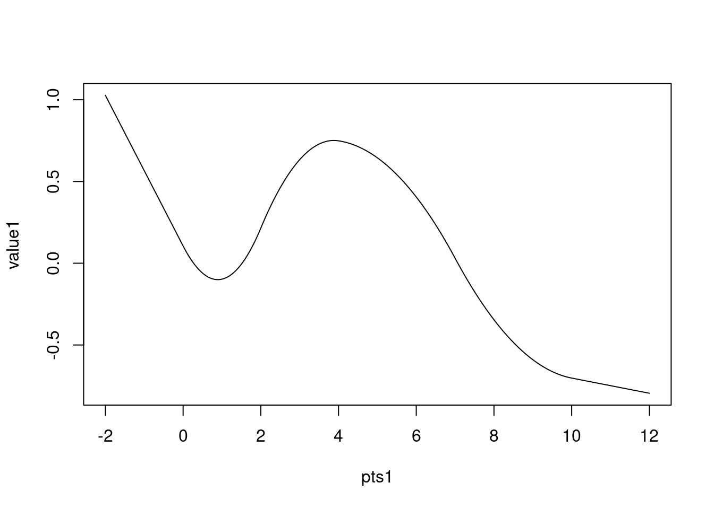

Mesh construction
domain <- cbind(rnorm(4, sd = 3), rnorm(4))
(mesh2 <- fm_mesh_2d(
boundary = fm_extensions(domain, c(2.5, 5)),
max.edge = c(0.5, 2)
))
#> fm_mesh_2d object:
#> Manifold: R2
#> V / E / T: 888 / 2622 / 1735
#> Euler char.: 1
#> Constraints: 39 boundary edges (1 group: 1), 115 interior edges (1 group: 1)
#> Bounding box: (-11.963110, 8.246925) x (-5.522181, 5.499657) x (0,0)
#> Basis d.o.f.: 888
plot(mesh2, axes = TRUE)
(mesh1 <- fm_mesh_1d(
c(0, 2, 4, 7, 10),
boundary = "free", # c("neumann", "dirichlet"),
degree = 2
))
#> fm_mesh_1d object:
#> Manifold: R1
#> #{knots}: 5
#> Interval: ( 0, 10)
#> Boundary: (free, free)
#> B-spline degree: 2
#> Basis d.o.f.: 6Point lookup and evaluation
pts <- cbind(rnorm(400, sd = 3), rnorm(400))
# Find what triangle each point is in, and it's triangular Barycentric coordinates
bary <- fm_bary(mesh2, loc = pts)
# How many points are outside the mesh?
sum(is.na(bary$t))
#> [1] 2
head(bary$bary)
#> [,1] [,2] [,3]
#> [1,] 0.04720217 0.5813611 0.3714367
#> [2,] 0.13950532 0.7212692 0.1392255
#> [3,] 0.43189448 0.1384910 0.4296145
#> [4,] 0.20031702 0.3721526 0.4275303
#> [5,] 0.21259133 0.3686084 0.4188003
#> [6,] 0.44390951 0.1739205 0.3821700
# Construct an evaluator object
evaluator <- fm_evaluator(mesh2, loc = pts)
sum(!evaluator$proj$ok)
#> [1] 2
# Values for the basis function weights; for ordinary 2d meshes this coincides
# with the resulting values at the vertices, but this is not true for e.g.
# 2nd order B-splines on 1d meshes.
field <- mesh2$loc[, 1]
value <- fm_evaluate(evaluator, field = field)
sum(abs(pts[, 1] - value), na.rm = TRUE)
#> [1] 5.704812e-14
pts1 <- seq(-2, 12, length.out = 1000)
# Find what segment, and its interval Barycentric coordinates
bary1 <- fm_bary(mesh1, loc = pts1)
# Points outside the interval are treated differently depending on the
# boundary conditions:
sum(is.na(bary1$t))
#> [1] 0
head(bary1$bary)
#> [,1] [,2]
#> [1,] 2.000000 -1.000000
#> [2,] 1.992993 -0.992993
#> [3,] 1.985986 -0.985986
#> [4,] 1.978979 -0.978979
#> [5,] 1.971972 -0.971972
#> [6,] 1.964965 -0.964965
# Construct an evaluator object.
evaluator1 <- fm_evaluator(mesh1, loc = pts1)
# mesh_1d basis functions are defined everywhere
sum(!evaluator1$proj$ok)
#> [1] 0
# Values for the basis function weights; for ordinary 2d meshes this coincides
# with the resulting values at the vertices, but this is not true for e.g.
# 2nd order B-splines on 1d meshes.
field1 <- rnorm(fm_dof(mesh1))
value1 <- fm_evaluate(evaluator1, field = field1)
plot(pts1, value1, type = "l")


Stochastic process simulation
samp <- fm_matern_sample(mesh2, alpha = 2, rho = 4, sigma = 1)[, 1]
evaluator <- fm_evaluator(mesh2, lattice = fm_evaluator_lattice(mesh2, dims = c(150, 50)))
image(evaluator$x, evaluator$y, fm_evaluate(evaluator, field = samp), asp = 1)